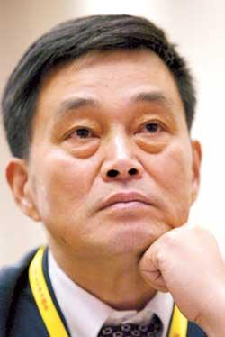
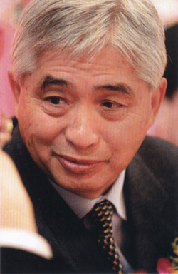
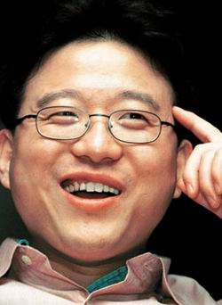
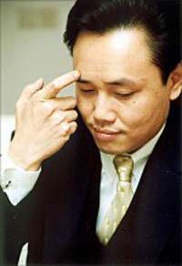

| 说说历届中国首富 |
| 《首席执行官》CEO.ICXO.COM ( 日期：2005-09-19 10:35) CEO频道今日最新资讯 |
|
|
| 【ICXO.com编者按】 从刘永行兄弟，到荣智健，再到丁磊、黄光裕，四任首富从事行业差异巨大；从创业起步到成为首富最长者达24年，而最短者只用了6年…… |
| 从刘永行兄弟，到荣智健，再到丁磊、黄光裕，四任首富从事行业差异巨大，再一次印证了中国的一句俗语——行行出状元。  http://images4.icxo.com/20059/2005919978cho243.jpg 刘永行兄弟从养殖业起步，最后在饲料业中成就霸业，他们做的是与农业相关的事情；而荣智健旗下的中信泰富(HK 0267)则从事基建、能源、航空、电讯等基础性行业；丁磊的创业恰好赶上了互联网的热潮，而在流通业越来越重要的时候，黄光裕冒了出来。 虽行业各不相同，似乎杂乱无章，却也反映出一种趋势——与经济大势越吻合，往往越能够聚积更多的财富。如今，服务业比农业、制造业的财富效应更强。从农业、基础设施到互联网、零售业，恰好说明了这种转变。 盖茨之所以成为首富，同样是由于抓住了社会经济转变的机遇。在20世纪初的时候，还是石油大王洛克菲勒和钢铁大王卡内基在争夺世界首富的头衔，而盖茨连续10年名列首富之位，正是人类进入信息社会的必然结果。即便是如今最能威胁其地位的依然是来自零售业的沃顿家族(沃尔玛公司的创始家族)，今年初曾传言超出盖茨的宜家家居老板坎普拉德从事的也正是零售业。  http://images4.icxo.com/20059/2005919978cho244.jpg 在几任首富中，除荣智健具有较为显赫的家世外(其父为前任国家副主席荣毅仁)，其余3人皆出生于普通家庭，并无任何可资利用的背景和资源，他们的事业成功在很大程度上源于自身努力。 从创业起步到成为首富最长者达24年，而最短者只用了6年。荣智健1978年移居香港时已经36岁，可以看作是其创业的开端，24年后，他主要凭借拥有中信泰富的股权成为中国内地首富。此时丁磊创立网易不过5年，一年之后，丁就超过荣智健登上首富之位，年仅32岁，比荣创业之初还要年轻，其财富膨胀速度无人可及，只有盛大网络的陈天桥可与之匹敌。 兄弟分家与兄弟情谊 四任首富在创业时基本都有明确的合作伙伴，而在创业成功后处理与创业伙伴关系的问题上，他们的表现也颇耐人寻味。 刘永行最初是4兄弟(他排行第二)一起创业，1982年，他们辞去公职，卖掉手表、自行车，一共凑起原始资本1000元，开始做起养鹌鹑、养鸡的专业户。1989年，在刘永行和老三陈育新(原名刘永美，后因过继至陈家改为此名)共同研制出新型猪饲料后，他们将10万只鹌鹑全部宰杀，转移至饲料行业，这也奠定了其相当长一段时期内的产业基础。 1992年，刘氏兄弟第一次进行了较为清晰的产业划分：老大刘永言向高科技领域进军，陈育新负责现有产业运转并开拓房地产，而老四刘永好则跟着刘永行去各地发展分公司、拓展全国市场。3年后，刘氏兄弟正式分家，从产权上明确了各自的利益。1995年4月13日，根据“资产基本平分”的原则，各地分公司被划分为东北与西南两个区域，刘永好得到西南片区，刘永行则得到东北片区。1995年5月15日，刘氏兄弟在董事会文件上正式签字确认分割。此事在当时被媒体热炒，此后刘永行与刘永好兄弟二人的关系也常常被做出各种猜测。 所幸的是，在分家后，刘氏兄弟各自的产业发展并未停滞不前。刘永好在分家后开始多元化尝试，先后涉足房地产、制药、金融、乳业等领域。1997年，刘永好将旗下部分优良资产打包后，以“新希望”之名在深圳交易所上市。而刘永行旗下东方希望在很长时间内则坚持以饲料业为主，尝试性地对金融等领域做过少量投资，在进入21世纪后，他终于确定下第二主业——铝业，几乎倾个人全部资本投入。刘氏兄弟4人，除刘永好之外，其余皆非常低调，外界尚且可以偶尔听到刘永行的作为，其他两人的消息根本没有。 与兄弟一道创业的还有黄光裕，他在17岁时便与哥哥黄俊烈离家北上闯荡。在1993年，他们创立国美电器的第七年，两兄弟经协商后分家。黄光裕分得了“国美”品牌与几十万元的现金，而房地产业务等其他资产则归哥哥，他将分家的原因归结为“一个企业不能有两个负责人”。而兄弟两人的关系并未因分家受到影响，国美电器现在的办公所在地鹏润大厦正是从黄俊烈旗下的新恒基集团买下，此前所租住的静安中心也是后者名下的物业。如今，黄光裕也准备大举杀入房地产领域。 而荣智健在1978年初到香港之时，于年底在堂兄弟荣智鑫、荣智谦创立的爱卡电子担任董事总经理，但并未持股。1981年，爱卡电子增资扩股，荣智健持股33.3.%，而后在1987年又受让了堂兄弟的股份，持股达到66.7%。这两次总投资不过100万港元。1989年，荣智健将所持全部爱卡电子股份转让给另一股东，代价800万美元，8年之间，增值50余倍。在某种程度上，其堂兄弟在荣智健初始发展阶段起到了很重要的作用。荣智鑫兄弟很少被外界提及，极少出现在公众视野中，只在2001年方正控股买壳“荣文科技”的时候，外界才又看到了背后荣智鑫的名字。  http://images4.icxo.com/20059/2005919978cho245.jpg 相较之下，创业历程最短的丁磊所处关系也相对简单。网易从创立之初为丁一人投资，由于伙伴皆非常年轻，初期的发展态势也不甚明朗，因此基本未传出分割或不合的消息。后来，其亲兄弟丁波才加入网易，曾出任副总裁兼上海分公司总经理职务。 首富的资本控制欲 在公司的资本控制上，除荣智健外，其他几位首富都保持着绝对控股权(荣智健所属中信泰富第一大股东为中信集团，为国有企业，荣个人为第二大股东)。在公司治理上，也表现出较强的类家族企业模式，虽然如此这般往往受到外界的批评和质疑，但在当前，似乎这种模式更符合他们的利益。 刘永行是其中最典型的一位，他旗下的东方希望集团至今未上市，也未控制有任何上市公司，其最高层面的股权结构仍不为人知，但刘本人持有绝对性股权是肯定的，而他在公司日常管理上也是“一个人说了算”。  http://images4.icxo.com/20059/2005919978cho246.jpg 黄光裕在国美电器的地位与之相似。国美电器在借壳中国鹏润之前为黄个人100%所有，即便在交易完成后，其持股量仍然可能会在惊人的97%以上(若不向外转让股权)。黄光裕对公司的管理控制非常强烈，国美电器先后曾发生几次较大的管理结构和高层人员的变动，都是由黄一人设计，其威望在公司内无人可以挑战。目前，其妻子杜鹃和妹夫张志铭都在上市公司中担任执行董事职务。 而与之同行业的苏宁电器的掌门人张近东在股权结构上已相对较为开放，苏宁电器(SZ 002024)在上市之后，其拥有的股权已稀释到40%左右，先后加入公司的几位高管都拥有不等数量的股权。 丁磊在股权控制上同样比较保守，创业之初的网易为其个人全资拥有，创业伙伴并未拥有股权。直到谋划上市，重新搭建公司架构之时，丁磊才开始向外转让股份。除了向风险投资机构转让外，他先后几次向包括高管在内的公司员工转让了数量不等的股权，尽管如此，他至今仍持有网易股份在53%左右，仍处于绝对控股地位。在2001年由于涉嫌财务造假风波，丁磊除保持首席架构设计师头衔外，不再担任具体管理职务，但在公司发展战略规划上，他依然保持着足够的影响力。 与丁磊相比，王志东的经历算是一个教训。其创立新浪之初便引入了风险投资，此后又经历多次融资，在新浪上市之后，其个人所持股份仅在6.1%左右。2001年6月，王志东从新浪黯然离职，在资本层面没有实质性控制力显然是最重要的原因。假设他在股权控制上与丁磊一样保守，故事就会重新书写。 资本市场的力量 正是因为对公司股权的绝对控制，才使得他们的财富地位突显出来，无论是丁磊还是黄光裕，反观与他们的发展较为类似的王志东和张近东，财富值根本无法企及。而在四任首富中，除刘永行外，都是因为资本市场的财富放大效应才拥有如此地位。 刘永行不管是在早期从事养殖业，还是后来的饲料业，再到如今的铝业，都在踏踏实实地埋头做事，除了偶尔进行二级市场投资外，未与资本市场发生密切的关系，其实业资产规模相当庞大。据业内人士透露，其向外投资完全为个人拥有的现金。几位业界老总在与刘深入接触后，都认为，在如今的中国，刘永行是做实业的第一人。 而荣智健的发展就明显地与资本市场关系密切起来。在移居香港8年后的1986年，荣智健正式加入中信香港，出任董事总经理，其主要作为便是并购，通过超常规并购迅速做大企业。1987年2月，中信香港以23亿港元的代价收购国泰航空12.5%的股权；1989年，中信香港通过一系列运作，最终收购上市公司泰富发展，持有59.51%的股权，后改组为中信泰富；1990年，中信泰富以100多亿港元的价格收购香港电讯20%的股权。如今，中信集团通过中信香港仍持有22%多的股权，保持着第一大股东的地位，而荣智健通过旗下个人公司持有中信泰富4亿多股股份(超过18%),为第二大股东，正是这部分股权构成其财富的绝大部分。 丁磊和黄光裕对资本市场的利用就更加充分。丁磊创业之初，所从事业务为软件，乃个人兴趣，后来互联网热潮到来，网易摇身一变成为门户。此后为了到纳斯达克上市的目标，丁磊个人和网易公司都发生明显转变，最后尽管“流血上市”，在2001年财务风波里差点卖掉网易，但丁磊最终坚持下来，凭借一家经营短信和在线游戏的轻资产公司迅速踏上首富之位。而黄光裕在一场“左手倒右手”的游戏中，之所以可以自己定下如此高的身价，乃在于资本市场对连锁零售业的认可，网络和现金流都是为机构投资者所看重的资源。 所幸的是，尽管通过资本市场将自身价值得以最大化，但他们并没有停留在简单的玩概念阶段，四任首富都有比较踏实的基础业务，在各自的行业内都处在领先位置。打通产业链和资本链，这是成熟市场上的成熟游戏玩法，如今，中国的富豪们也开始具有类似素质，尤其是黄光裕在国美电器借壳过程中表现出的纯属技巧，令专业投资人士称绝。
|